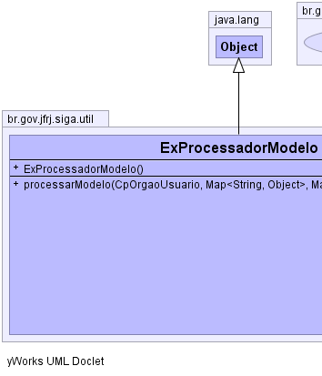
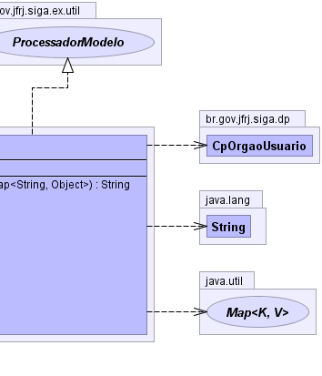

br.gov.jfrj.siga.util.ExProcessadorModelo
br.gov.jfrj.siga.util.ExProcessadorModelo
|
|||||||||
| PREV CLASS NEXT CLASS | FRAMES NO FRAMES | ||||||||
| SUMMARY: NESTED | FIELD | CONSTR | METHOD | DETAIL: FIELD | CONSTR | METHOD | ||||||||
java.lang.Object
public class ExProcessadorModelo
|  |  |
| Constructor Summary | |
|---|---|
ExProcessadorModelo()
|
|
| Method Summary | |
|---|---|
java.lang.String |
processarModelo(CpOrgaoUsuario ou,
java.util.Map<java.lang.String,java.lang.Object> attrs,
java.util.Map<java.lang.String,java.lang.Object> params)
Processar um template JSP e retornar o resultado na forma de uma string |
| Methods inherited from class java.lang.Object |
|---|
clone, equals, finalize, getClass, hashCode, notify, notifyAll, toString, wait, wait, wait |
| Constructor Detail |
|---|
public ExProcessadorModelo()
| Method Detail |
|---|
public java.lang.String processarModelo(CpOrgaoUsuario ou,
java.util.Map<java.lang.String,java.lang.Object> attrs,
java.util.Map<java.lang.String,java.lang.Object> params)
throws java.lang.Exception
processarModelo in interface ProcessadorModelodoc - mov - acao - params -
java.lang.Exception
|
|||||||||
| PREV CLASS NEXT CLASS | FRAMES NO FRAMES | ||||||||
| SUMMARY: NESTED | FIELD | CONSTR | METHOD | DETAIL: FIELD | CONSTR | METHOD | ||||||||